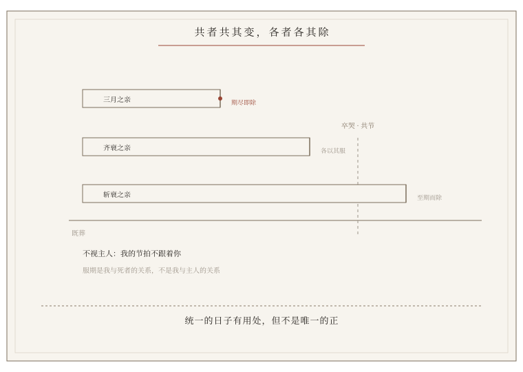

檀弓上 · 三·一百 · 第 303 课
既葬，各以其服除。
说什么事：下葬之后，各人按自己所服的服制，到期就除掉，不必等主人卒哭之后统一变除。
落在哪一层：除服之时。论「各随其服，各有其时」。
为何编在此位：上一课论荐新之「如朔奠」，是同礼相比；此课论除服之「各以其服」，是异礼各归其位。本批十课，至此收在「各」字上。
【经】既葬，各以其服除。
【注】卒哭，當變衰麻者變之。或有除者，不視主人。
【疏】「既葬」谓三月葬竟后至卒哭，重亲各随所受而变服。若三月之亲，至三月数满应除者，葬竟各自除，不待主人卒哭之变，故云「各以其服除」也。
既葬 下葬之后。疏「三月葬竟后至卒哭」。士三月而葬。
各 各人、各自。此字是全节之眼。
以 依、按照。
其服 自己所服的服制。其，指各人。
除 除服、脱去丧服。
重亲 疏语。服重之亲，如斩衰、齐衰之亲。
不视主人 注语。不看着主人（的变除之时）行事，即不从主人之节。
下葬之后，各人按自己所服的服制，到期便除。
此节讲的是「统一」之外的一种秩序。
丧礼有一个总节：卒哭。卒哭之日，当变衰麻者变之——众人一齐从重服转为轻服。这是一个共同的时刻，由主人主持。
但有一类人不在此例：服三月之亲者。三月数满，他的服期已尽，葬毕就该除，不必等到卒哭。注说得极简：「或有除者，不视主人。」
「不视主人」四字，是此节的骨头。丧礼之中，主人是节拍的执掌者，众人的变除都跟着他的时辰走。此节却明说：有一类人不看主人的时辰，看自己的。
为什么？因为服期各有长短。三月之亲与三年之亲同在一场丧事里，若一律等卒哭再除，则三月之亲要服过其期；若一律按自己的日子除，则各人的时辰彼此错开，场面就散了。
礼的选择是：大节齐，小节各。卒哭之变是共的，除服之时是各的。「各以其服除」五个字，把「共」与「各」的分界划在这里。
第一层 礼有共时，也有各时 一场丧事，众人同时始服，这是共；何时除，依亲疏远近，这是各。若只有共，则亲疏不分，礼成了齐步走；若只有各，则无所统摄，礼成了各行其是。此节所示，是二者如何并存：共者共其变，各者各其除。
第二层 「不视主人」的分量 在丧礼中，「视主人」是一种从属关系的表达：我的节拍跟着你。此节明许「不视」，等于承认：有一类事，从属关系不该介入。服期是个人与死者的关系，不是个人与主人的关系；把它交给主人统摄，是以人情覆盖制度。
这一点在今日的组织里也常见：一件事，什么时候该由集体统一定，什么时候该由各人按自己的期限办，界线常被模糊。此节给的是「服期」这一条清楚的界。
第三层 「三月」这个数的意义 疏举「三月之亲」为例。三月是缌麻之服的正期，也是士之葬期。三月而葬、三月而除，两者恰好同期。所以这类人几乎是葬毕即除，一天不延。这个巧合不是偶然：缌麻之亲的服期，本就按最短的丧期设定。
第四层 本节与 301 的对照 301「妇人不葛带」，讲的是「变到某一处就不再变」；此节讲「除到某一日就各自除」。前者守一个不变的点，后者守一个各自的点。两节合看，可见礼在「变」这件事上的两种防：防变得太尽，防变得太齐。
与今日何干 今人办丧，多定一个统一的「脱孝」之日。此节提醒：统一的日子有它的用处（众人有个了结），但它不是唯一的正。有些人早已到期，让他多穿几日，只是形式；有些人的期还长，让他随众脱了，反倒是亏。
| 左 | 右 |
|---|---|
| 既葬 | 时点 |
| 各 | 全节之眼 |
| 以其服 | 依本服 |
| 除 | 脱去 |
| 三月之亲 | 疏所举之例 |
| 数满应除 | 其期已尽 |
| 不待卒哭 | 不共其时 |
| 不视主人 | 不从其节 |
画一处墓域之外的草地，视点平视。画面中一列五人各持一束丧服，衣色深浅不一，分立于五处，彼此相隔数步，各自低头解衣。五人之前另立一人（正面、居中最前、衣色最重、双手未动），为众人之首。五人中位于最左的一人已将丧服脱下、叠于地上；其余四人仍服之。地上另置一只空木箱。不写文字、不画人面细节。赭色只用在最左那人叠于地上的那件丧服的边线，与空木箱的锁扣。
